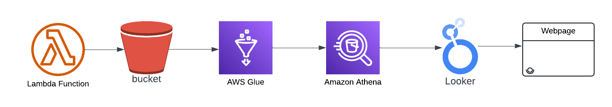

Project Title: F1 Data Analysis and Visualisation
Project Overview:
The project involves analysing Formula 1 (F1) data to gain insights into race results, constructor standings, and race events. The primary goal is to aggregate and visualise data from various sources to produce comprehensive reports and dashboards.
Tools and Technologies Used:

- AWS Lambda: Automatically pulls data from an online datastore and triggers data processing workflows.
- S3 Bucket: Used for storing raw and processed CSV files.
- AWS Glue: Employed for Extract, Transform, Load (ETL) processes. Transforms raw CSV data into a format suitable for querying in Athena.
- Apache Spark: Utilised for processing and converting large volumes of data from text files to Parquet files.
- AWS Athena: Used to analyse and prepare transformed results for visualisation tools.
- Looker Studio: Implemented to create interactive dashboards and reports based on the analysed data.
- HTML & CSS: Used to design and style the web page displaying the reports and visualisations.
Methodology:
- Data Collection:
- AWS Lambda: Automatically pulls data from an online datastore and uploads it to S3.
- Gathered additional data from the online datastore.
- Stored raw data in S3 buckets and performed initial data cleaning.
- Data Processing:
- Used AWS Glue to extract and transform data, ensuring consistency and removing null values.
- Converted text files to Parquet format using Apache Spark for efficient querying.
- Data Analysis:
- Queried data using AWS Athena to generate insights, such as the maximum number of race rounds per year and constructor standings.
- Analysed results to identify trends and key metrics.
- Data Visualisation:
- Created interactive dashboards in Looker Studio to display race results, constructor standings, and other key metrics.
- Embedded Looker Studio reports into a web page using HTML and CSS for public access.
- Embedding and Display:
- Used HTML iframes to embed Looker Studio reports into the web page.
- Styled the webpage with CSS to ensure a clean and professional appearance, including rounded corners, inner shadows for textboxes, and a consistent border colour around the page.
Results:
- Developed an interactive dashboard that allows users to explore F1 data, including race results, constructor standings, and race details.
- Enabled real-time updates and visualisation of F1 statistics and trends.
- Successfully embedded the report on a webpage, ensuring the design and functionality are user-friendly and visually appealing.
Challenges and Solutions:
- Issue: Data duplication occurred when appending new data to Athena tables.
- Solution: Implemented Glue bookmarks to keep track of processed data.
Conclusion:
The F1 Data Analysis and Visualisation project successfully utilised AWS services, including Lambda for automated data pulling,
and Looker Studio to create a dynamic and interactive dashboard. The project demonstrated effective data processing, analysis, and visualisation techniques, resulting in a comprehensive tool for exploring F1 statistics.